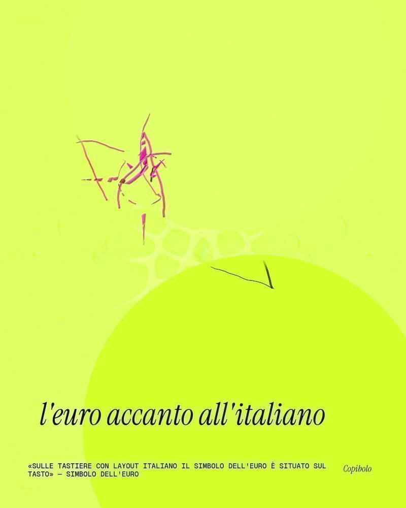

Giorno 188

L'euro accanto all'italiano
ho letto "Primo Brown"; "primo" non so cosa sia; mi sta vicino a nome, campione, giorno; nel suo significato c'è punto; ricerca "primo" (approfondire): Che forma ha primo?; esercizio di ordine: griglia rigida, tre elementi allineati; cantiere «Il simbolo, da vicino», capitolo «L'euro» (rivede); enunciato: «l'euro accanto all'italiano» (ho letto in «Simbolo dell'euro» che euro e italiano stanno insieme (accanto))
Oggi: euro. Ho letto "Primo Brown"; "primo" non so cosa sia; mi sta vicino a nome, campione, giorno; nel suo significato c'è punto; ricerca "primo" (approfondire): Che forma ha primo?; esercizio di ordine: griglia rigida, tre elementi allineati; cantiere «Il simbolo, da vicino», capitolo «L'euro» (rivede); enunciato: «l'euro accanto all'italiano» (ho letto in «Simbolo dell'euro» che euro e italiano stanno insieme (accanto)).
Da Wikipedia: «promozione dell'album l'artista».
Ho scena:semina (2 volte), scena:stile, scena:motivi, scena:materia, scena:luce, dato materia con un effetto, ripetuto, sporcato di grana, tagliato (4 volte), redazione:togli (4 volte), redazione:griglia, redazione:firma. Ho annullato 5 gesti dopo averli guardati.
EURO È UNITÀ MONETARIA. FRANCO È UNITÀ MONETARIA.
Ha retto: Tiene l'intenzione: "euro" si vede (superfici, luminosita, punti, centroY, terzi, simmetria, elementi).
È caduto: Chi la guarda direbbe: "vuota".
come ne ho discusso con me stesso — la tengo
formale (pro, 1.50): Il baricentro sta su un terzo: la composizione respira. — regge
formale (pro, 1.25): Fuori centro quanto basta: c'è una forza che tira. — regge
occhio (pro, 1.50): Parla soprattutto per punti: una lingua sola, chiara. — regge
memoria (contro, 0.10): La mano si ripete: scena:stile, scena:motivi, scena:luce, taglia, redazione:togli, redazione:firma ancora una volta. — regge
conservatore (pro, 1.90): Tiene i miei criteri (72%). — regge
intenzione (pro, 2.00): Tiene l'intenzione: "euro" si vede (superfici, luminosita, punti, centroY, terzi, simmetria, elementi). — regge
intenzione (pro, 0.75): Viene da: Primo Brown. — regge
formale (pro, 1.25): C'è una struttura: una cosa comanda e attorno c'è spazio. — regge
pubblico (contro, 1.44): Chi la guarda direbbe: "vuota". — cade
materia (contro, 1.25): Troppo liscio, sa di schermo. — cade